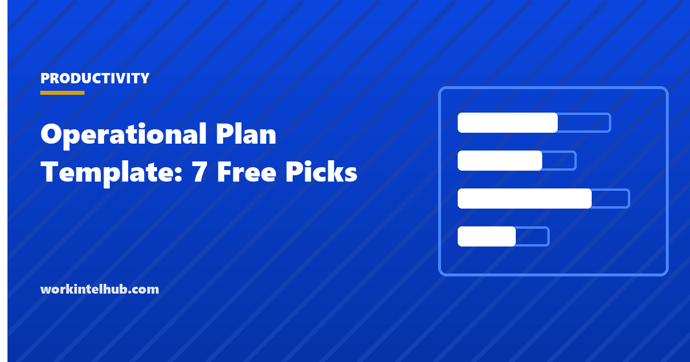

Operational Plan Template: 7 Free Picks

A strategic plan says where the organisation is going. An operational plan says what each team will do this year to get it there: the objectives, the initiatives that serve them, the measures that show progress, the people and money assigned, and the quarter by which each thing happens. It is the document that turns a strategy slide into a Monday morning, and most organisations that complain their strategy is not executed do not have one.
Seven templates cover the set: an annual operating plan on two pages, a department plan that cascades from it, a 90-day plan for the current quarter, a KPI tracker with targets and actuals, an initiative register with owners and status, an operating budget by quarter and a resource plan by role. The Excel workbook links KPIs to targets and initiatives to quarters; Word and PDF carry the plan narrative.
Download the templates
Free files: Word, Excel and PDF
Three files, free, no email required. Word to edit, Excel to track, PDF to print or share.
Templates open in Microsoft Word, Excel, Google Docs and Sheets, LibreOffice and any PDF reader. Free to use and adapt for your organisation.
The seven templates
| Template | Horizon | Owner | Reviewed |
|---|---|---|---|
| Annual operating plan | Year | Unit head | Quarterly |
| Department plan | Year | Department head | Quarterly |
| 90-day plan | Quarter | Team lead | Weekly |
| KPI tracker | Monthly | Each KPI owner | Monthly |
| Initiative register | Rolling | Each initiative owner | Fortnightly |
| Operating budget | Year by quarter | Finance partner | Monthly |
| Resource plan | Year | Unit head with HR | Quarterly |
How the plan cascades
Strategy sets two to four priorities. The annual operating plan turns each into objectives with a measure, a baseline and a target, and names the initiatives that will move the measure. Each department takes the objectives it contributes to and writes its own plan with the same structure. Each team takes its department's initiatives and writes a 90-day plan with milestones by fortnight. The KPI tracker is the same at every level, with the measures rolling up. When this chain exists, the question "why are we doing this?" has an answer three documents long; when it does not, every initiative is someone's idea.
The OKR template is an alternative structure for the objectives layer and works well inside this plan; the goal setting templates cover the individual layer below the team.
Measures that mean something
- A baseline, or the target is a guess.
- A target per quarter, not just for the year, or the first nine months are quiet.
- An owner who can move the number, not a committee.
- Outcomes over activity: tickets resolved within SLA, not tickets handled.
- Few. Six to ten KPIs for a unit; a tracker with forty is a report nobody reads.
- The HR metrics and productivity formula guides define the common ones.
Capacity is the constraint the plan forgets
Most operational plans list initiatives without asking who will do them. The resource plan asks: for each role, the FTE available after business as usual, the FTE the initiatives need, and the gap, with a decision to hire, reassign or drop an initiative. A plan that needs 14 FTE of project capacity from a department with 6 available is not a plan. The team capacity planning guide covers the arithmetic, and the capacity planning templates the sheets.
Key takeaways
- An operational plan turns strategy into objectives with measures, initiatives with owners and quarters, and the budget and people to deliver them.
- Cascade it: organisation, department, team 90-day plan, with the same KPI structure at each level.
- Six to ten KPIs with baselines, quarterly targets and single owners.
- Check capacity before committing to initiatives; the resource plan is where plans become honest.
Frequently asked questions
What is an operational plan?
A one-year plan that sets out what a unit will do to deliver the organisation's strategy: objectives with measures and targets, the initiatives that serve them, who owns each, when it happens by quarter, and the budget and people assigned. It sits between the strategic plan and the team's weekly work.
What is the difference between a strategic plan and an operational plan?
A strategic plan sets direction over three to five years: where to compete, what to become. An operational plan covers one year and says what will be done, by whom, by when and with what resources to move toward that direction. Strategy without an operational plan stays on the slide.
What should an operational plan include?
Priorities served, objectives with KPIs (baseline, target, owner), initiatives with owners, dates and budgets, headcount and resource needs, risks and dependencies, and the review cadence. The templates cover each in a separate document or sheet.
How often should an operational plan be reviewed?
KPIs monthly, initiatives fortnightly, the plan itself quarterly, with the 90-day plan rewritten each quarter from what the review found. An annual plan reviewed once a year is a prediction, not a plan.
How many objectives should an operational plan have?
Three to five per unit, each with one or two KPIs. Departments and teams inherit the ones they contribute to rather than inventing their own. More than that and effort spreads thin and nothing moves.